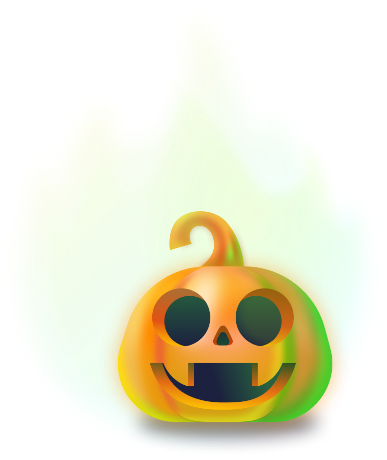

O Labu "Reiza"
A abóbora
TOP #3 FANTASMAS ASSUSTADORES 2024
UUUUH
DOCES OU TRAVESSURAS?!
Olá, sou Reiza, as pessoas me chamam de “O Labu”. Atualmente estou tentando aprender algo novo, construindo minha própria bicicleta com peças feitas de ossos encontrados no Cemitério.